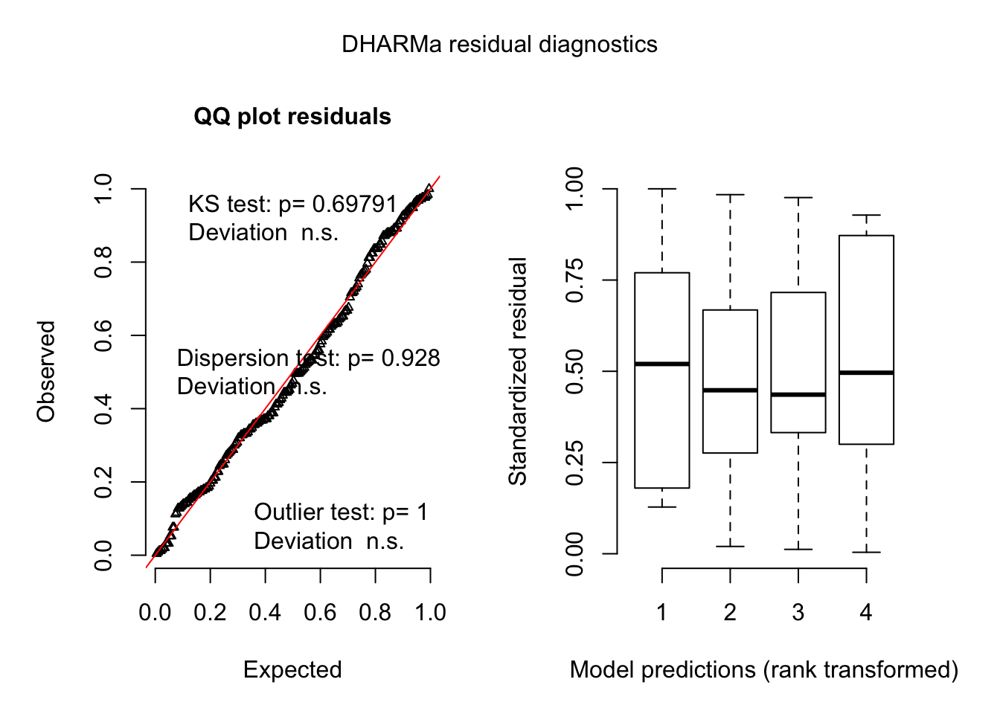

library(tidyverse)
library(here)
library(readxl)
library(lme4)
library(car)
library(emmeans)
library(multcomp)
library(cowplot)dat1 <- read_excel(here("data", "data_field.xlsx"), 1) %>%
filter(inoculum != "test" &
trial != "VIC2017"&
sev != "NA"
#inoculum != "Fmer2x"
# inoculum != "Fgra2x"
#& sev != 0 ## remove the ears with zero severity
#hybrid != "supremo"
#& hybrid != "RB9004"
) %>%
unite(ambiente, trial, hybrid, sep = ".", remove = F) %>%
mutate(sev = as.numeric(sev))
#dat1 %>% filter(sev == 0)
# group_by(hybrid, rep, inoculum) %>%
# summarise(mean = mean(sev, na.rm = T))Let’s make some plots of severity data. First, let’s see differences between the hybrids across the trials
##
## Attaching package: 'janitor'## The following objects are masked from 'package:stats':
##
## chisq.test, fisher.testdat2 <- dat1 %>%
mutate(sev2 = asin(sqrt(sev/100)),
sev3 = log(sev+0.5),
sev4 = case_when(sev > 99 ~ 99,
sev < 1 ~ 0.1,
TRUE ~ sev
))## `stat_bin()` using `bins = 30`. Pick better value with `binwidth`.## Min. 1st Qu. Median Mean 3rd Qu. Max.
## 0.00 3.75 20.00 37.09 70.00 100.00dat2 %>%
ggplot(aes(inoculum, sev, fill = inoculum))+
geom_boxplot(outlier.colour = NA, alpha = 0.3)+
geom_jitter(size = 2, width = 0.3,
shape = 16, alpha = 0.3)+
#scale_fill_viridis_d()+
facet_wrap(~ambiente)+
theme_minimal_hgrid()+
theme(legend.position = "none",axis.text.x = element_text(angle = 35, hjust = 1))+
labs(y = "GER severity (%)", x = "Inoculation treatment")library(glmmTMB)
med <- glmmTMB(sev4/100 ~ inoculum + (1 |trial/hybrid/rep),
family=beta_family(link = "logit"),
data = dat2)
AIC(med)## [1] -279.1987## boundary (singular) fit: see ?isSingular## boundary (singular) fit: see ?isSingularicc = function(model){
#### compute ICC
var.components = as.data.frame(VarCorr(model))$vcov
ICC = var.components[1]/sum(var.components)
#### find out average cluster size
id.name = names(coef(model))
clusters = nrow(matrix(unlist((coef(model)[id.name]))))
n = length(residuals(model))
average.cluster.size = n/clusters
#### compute design effects
design.effect = 1+ICC*(average.cluster.size-1)
#### return stuff
list(icc=ICC, design.effect=design.effect)
}
icc(med00)## $icc
## [1] 0.1339909
##
## $design.effect
## [1] 0.9695475## This is DHARMa 0.3.3.0. For overview type '?DHARMa'. For recent changes, type news(package = 'DHARMa') Note: Syntax of plotResiduals has changed in 0.3.0, see ?plotResiduals for details
## inoculum response SE df lower.CL upper.CL
## Fgra 0.0218 0.00938 64.1 0.00914 0.0509
## Fgra→Fmer 0.1942 0.06779 57.6 0.09198 0.3646
## Fmer 0.6768 0.09758 62.8 0.46198 0.8363
## Fmer→Fgra 0.4110 0.10809 61.5 0.22222 0.6301
##
## Degrees-of-freedom method: kenward-roger
## Confidence level used: 0.95
## Intervals are back-transformed from the logit scalep2 <- medias2$emmeans %>% as.data.frame() %>%
ggplot(aes(inoculum, response*100, color = inoculum))+
geom_point(size = 3) +
geom_errorbar(aes(ymin = lower.CL*100, ymax = upper.CL*100, width = 0))+
theme_minimal()+
coord_flip()+
theme(legend.position="none",
axis.text.y=element_blank(),
panel.grid.major.x = element_blank(),
#axis.text.x = element_text(angle = 45, hjust = 1),
#legend.text = element_text(face = "italic", size = 6),
#strip.text = element_text(face = "italic"),
plot.margin = margin(0, 0.1, 0.1, 0.1, unit = "cm")
)+
labs(y = "GER severity (%)", x ="" )
p2##
## Attaching package: 'patchwork'## The following object is masked from 'package:cowplot':
##
## align_plots## The following object is masked from 'package:MASS':
##
## areadat3 <- read_excel(here("data", "data_field.xlsx"), 1) %>%
filter(inoculum != "test" &
#sev > 0 &
hybrid != "supremo" &
trial == "VIC2017"&
sev != "NA" ) %>%
unite(ambiente, trial, hybrid, sep = ".", remove = F) %>%
mutate(sev = as.numeric(sev))
dat3 %>%
tabyl(inoculum)dat3 <- dat3 %>%
mutate(sev2 = asin(sqrt(sev/100)),
sev3 = log(sev+0.5),
sev4 = case_when(sev > 99 ~ 99.9,
sev < 1 ~ 0.1,
TRUE ~ sev
))
summary(dat3$sev)## Min. 1st Qu. Median Mean 3rd Qu. Max.
## 0.00 4.00 8.00 16.94 22.25 100.00p5 <- dat3 %>%
ggplot(aes(x = sev))+
geom_histogram(binwidth = 5, fill = "steelblue", color = "white")+
theme_minimal_grid()+
labs(x = "GER severity (%)", x = "Frequency")
p44 <- dat3 %>%
ggplot(aes(x = log(sev)))+
geom_histogram( fill = "steelblue", color = "white")+
theme_minimal_grid()+
labs(x = "log-transformed GER severity", x = "Frequency")p6 <- dat3 %>%
group_by(hybrid, inoculum, block, sev) %>%
summarize(sev2 = mean(sev)) %>%
ggplot(aes(inoculum, sev2, fill = inoculum, shape = factor(block)))+
geom_boxplot(outlier.colour = "grey30", alpha = 0.3)+
#geom_jitter(size = 2, width = 0.1, alpha = 0.2)
theme_minimal_hgrid()+
theme(legend.position = "none",
axis.text.x = element_text(angle = 35, hjust = 1))+ labs(y = "GER severity (%)", x = "Inoculation treatment")
p61 <- dat3 %>%
group_by(hybrid, inoculum, block, sev) %>%
summarize(sev2 = mean(sev)) %>%
ggplot(aes(inoculum, log(sev2), fill = inoculum))+
geom_boxplot(outlier.colour = NA, alpha = 0.3)+
geom_jitter(size = 2, width = 0.1,
shape = 16, alpha = 0.2)+
theme_minimal_hgrid()+
theme(legend.position = "none")+
labs(y = "log-transformed percent severity", x = "Inoculation treatment")
summary(dat3$sev)## Min. 1st Qu. Median Mean 3rd Qu. Max.
## 0.00 4.00 8.00 16.94 22.25 100.00(p5/p44 | p6) +
plot_layout(widths = c(1.5,2))+
plot_annotation(tag_levels = 'A')+
ggsave("figs/Fig-box2.png", width =10, height =5)## `stat_bin()` using `bins = 30`. Pick better value with `binwidth`.## Warning: Removed 7 rows containing non-finite values (stat_bin).## `stat_bin()` using `bins = 30`. Pick better value with `binwidth`.## Warning: Removed 7 rows containing non-finite values (stat_bin).## [1] 510.5734library(emmeans)
medias4 <- emmeans(med2, pairwise ~ inoculum , type = "response")
CLD(medias4, Lettersfd = LETTERS, alpha = .05)## Warning: 'CLD' will be deprecated. Its use is discouraged.
## See '? CLD' for an explanation. Use 'pwpp' or 'multcomp::cld' instead.## Warning in CLD.emm_list(medias4, Lettersfd = LETTERS, alpha = 0.05): `CLD()`
## called with a list of 2 objects. Only the first one was used.## Warning: 'CLD' will be deprecated. Its use is discouraged.
## See '? CLD' for an explanation. Use 'pwpp' or 'multcomp::cld' instead.library(cowplot)
p3 <- pwpp(medias4$emmeans, add.space =3, sort = F)+
theme_minimal_grid()+
labs(y = "")
p3## [1] 2.408033 7.358244 10.062765 4.967081 5.265200 11.687537p4 <- medias4$emmeans %>% as.data.frame() %>%
ggplot(aes(inoculum, exp(emmean-0.5), color = inoculum))+
geom_point(size = 3) +
geom_errorbar(aes(ymin = exp(lower.CL-0.5), ymax = exp(upper.CL-0.5), width = 0))+
theme_minimal()+
coord_flip()+
theme(legend.position="none",
axis.text.y=element_blank(),
panel.grid.major.x = element_blank(),
#axis.text.x = element_text(angle = 45, hjust = 1),
#legend.text = element_text(face = "italic", size = 6),
#strip.text = element_text(face = "italic"),
plot.margin = margin(0, 0.1, 0.1, 0.1, unit = "cm")
)+
labs(y = "GER severity (%)", x ="" )
p4library(gsheet)
weather <- gsheet2tbl("https://docs.google.com/spreadsheets/d/1NUG2cdnVNOj1hwyeErQQe1efpFOmUIZVRcA5gxnmT6g/edit#gid=0")library(tidyverse)
library(cowplot)
Ptemp <- weather %>%
ggplot(aes(DAI, Tmean, color = Trial, group = Trial))+
geom_errorbar(aes(ymin = Tmin, ymax = Tmax, width =0), size =2, alpha = 0.1)+
geom_line(size =1)+
geom_line(aes(DAI, Tmin, color = Trial))+
geom_line(aes(DAI, Tmax, color = Trial))+
scale_color_viridis_d(direction =-1)+
theme_minimal_grid()+
scale_x_continuous(breaks = seq(-7, 30, 7))+
scale_y_continuous(breaks = seq(0,45,5), limits = c(0,45))+
theme(legend.position = "none")+
facet_wrap(~Trial, nrow = 1)+
labs(x = "Day Relative to Inoculation", y = "Temperature (C.)")
PtempPRH <- weather %>%
ggplot(aes(DAI, UR, color = Trial, group = Trial))+
geom_line(size =1, linetype = 1)+
scale_color_viridis_d(direction =-1)+
theme_minimal_grid()+
scale_x_continuous(breaks = seq(-7, 30, 7))+
scale_y_continuous(breaks = seq(0,100,5), limits = c(50,100))+
theme(legend.position = "none")+
facet_wrap(~ Trial, nrow = 1)+
labs(x = "Day Relative to Inoculation", y = "Mean relative humidity (%)")theme_set(theme_minimal_grid(font_size = 10))
sup_tmean <- weather %>%
ggplot(aes(Trial, Tmean, fill = Trial))+
geom_violin(color = "white")+
geom_boxplot(width=0.1, color = "white")+
ylim(0,45)+
scale_fill_viridis_d(direction =-1)+
theme(legend.position = "none",
axis.text.x = element_text(angle = 30, vjust = 1.2, hjust = 0.8))
sup_tmin <- weather %>%
ggplot(aes(Trial, Tmin, fill = Trial))+
geom_violin(color = "white")+
geom_boxplot(width=0.1, color = "white")+
ylim(0,45)+
scale_fill_viridis_d(direction =-1)+
theme(legend.position = "none",
axis.text.x = element_text(angle = 30, vjust = 1.2, hjust = 0.8))
sup_tmax <- weather %>%
ggplot(aes(Trial, Tmax, fill = Trial))+
geom_violin(color = "white")+
geom_boxplot(width=0.1, color = "white")+
ylim(0,45)+
scale_fill_viridis_d(direction =-1)+
theme(legend.position = "none",
axis.text.x = element_text(angle = 30, vjust = 1.2, hjust = 0.8))
sup_UR <-weather %>%
ggplot(aes(Trial, UR, fill = Trial))+
geom_violin(color = "white")+
geom_boxplot(width=0.1, color = "white")+
ylim(40,100)+
scale_fill_viridis_d(direction =-1)+
theme(legend.position = "none",
axis.text.x = element_text(angle = 30, vjust = 1.2, hjust = 0.8))
((sup_tmax | sup_tmin) /
(sup_tmean | sup_UR))+
plot_annotation(tag_levels = 'A')+
ggsave("figs/weather_violin.png", width = 6, height =5)